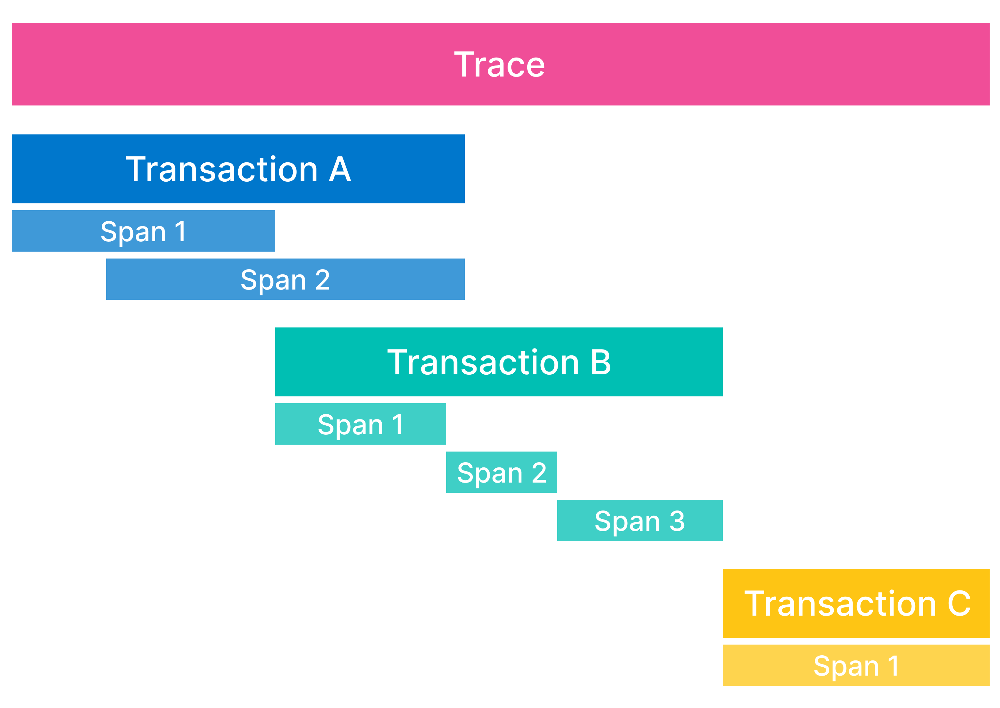

Application data types
editElastic APM agents capture different types of information from within their instrumented applications. These are known as events, and can be spans, transactions, traces, errors, or metrics.
Elastic APM helps you see what happens from start to finish when a request is made to an application:
- Spans: A span contain information about the execution of a specific code path. They are the building blocks of transactions and traces.
- Transactions: A transaction describes an event captured by an Elastic APM agent instrumenting a service. A transaction is technically a type of span that has additional attributes associated with it and often contains multiple child spans. You can think of transactions as the highest level of work you’re measuring within a service.
- Traces: A trace is a group of transactions and spans with a common root. Each trace tracks the entirety of a single request. When a trace travels through multiple services, it is known as a distributed trace.

In addition to the building blocks of traces, Elastic APM agents also capture:
- Errors: An error is created when something goes wrong with a request to an application. This event contains information to help you determine where and why an error occurred, often including in which transaction the error occurred.
- Metrics: Metrics measure the state of a system by gathering information on a regular interval.
Events can contain additional metadata which further enriches your data.